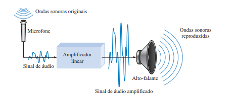

◉ GRANDEZAS ANALÓGICAS E DIGITAIS
Os circuitos eletrônicos podem ser divididos em duas grandes categorias, digitais e analógicos.
A eletrônica digital envolve grandezas com valores discretos e a eletrônica analógica envolve
grandezas com valores contínuos. Ainda que o leitor estude os fundamentos da eletrônica digital
neste livro, deve conhecer também algo sobre eletrônica analógica, pois muitas aplicações
requerem conhecimentos das duas áreas; são igualmente importantes os conhecimentos relativos ao
interfaceamento entre essas áreas.
Ao final do estudo desta seção você deverá ser capaz de:
■ Definir grandeza analógica
■ Definir grandeza digital
■ Explicar a diferença entre grandezas analógicas e digitais
■ Enunciar as vantagens dos sistemas digitais sobre os analógicos
■ Apresentar exemplos de como as grandezas digitais e analógicas são usadas em eletrônica
Uma grandeza analógica é aquela que apresenta valores contínuos. Uma grandeza digital é
aquela que apresenta valores discretos. A maioria daquilo que se pode medir quantitativamente na
natureza se encontra na forma analógica. Por exemplo, a temperatura do ar varia numa faixa contínua de valores.
Durante um determinado dia, a temperatura não passa, digamos, de 71º F para
72º F (~21,7º C para ~22,2º C) instantaneamente; ela passa por toda uma infinidade de valores intermediários.
Se fizermos um gráfico da temperatura em um dia de verão típico, teremos uma curva contínua e de variação suave
similar à curva mostrada na Figura. Outros exemplos de grandezas analógicas são tempo, pressão, distância e som.

Em vez de fazer um gráfico da temperatura em uma base contínua, suponha que façamos a leitura da temperatura
apenas a cada hora. Agora temos valores amostrados que representam a temperatura em pontos discretos no tempo
(de hora em hora) ao longo de um período de 24 horas, conforme indicado na Figura. Efetivamente convertemos
uma grandeza analógica em um formato que podemos agora digitalizar representando cada valor amostrado por um código digital.
É importante perceber que a Figura não é propriamente uma representação digital de uma grandeza analógica.
Vantagens dos Sistemas Digitais A representação digital tem certas vantagens sobre a representação analógica em aplicações eletrônicas.
Para citar uma, dados digitais podem ser processados e transmitidos de forma mais eficiente e confiável que dados analógicos. Além disso, dados digitais
possuem uma grande vantagem quando é necessário armazenamento (memorização). Por exemplo,
a música quando convertida para o formato digital pode ser armazenada de forma mais compacta e
reproduzida com maior precisão e pureza que quando está no formato analógico. O ruído (flutuações
indesejadas na tensão) quase não afeta os dados digitais tanto quanto afeta os sinais analógicos.
➤ Um Sistema Eletrônico Analógico
Um sistema de amplificação de som que pode ser ouvido por uma grande quantidade de pessoas é um
exemplo simples de uma aplicação da eletrônica analógica. O diagrama básico na Figura ilustra as
ondas sonoras, que são de natureza analógica, sendo captadas por um microfone e convertidas em uma
pequena tensão analógica denominada sinal de áudio. Essa tensão varia continuamente de acordo com
as variações no volume e na freqüência do som e é aplicada na entrada de um amplificador linear. A
saída do amplificador, que é uma reprodução ampliada da tensão de entrada, é enviada para o(s) altofalante(s).
O alto-falante converte o sinal de áudio amplificado de volta para o formato de ondas sonoras com um volume
muito maior que as ondas sonoras originais captadas pelo microfone.

➤ Um Sistema que Usa Métodos Analógicos e Digitais
O aparelho de CD (compact disk) é um exemplo de um sistema no qual são usados tanto circuitos
digitais quanto analógicos. O diagrama em bloco simplificado que é visto na Figura ilustra o
princípio básico. A música no formato digital é armazenada no CD. Um sistema óptico com diodo
laser capta os dados digitais a partir do disco girante e os transfere para um conversor
digitalanalógico (DAC – digital-to-analog converter).
◉ NÍVEIS LÓGICOS
As tensões usadas para representar 1 e 0 são denominados níveis lógicos. Teoricamente, um nível
de tensão representa um nível ALTO e o outro representa um nível BAIXO. Entretanto, em um
circuito digital prático, um nível ALTO pode ser qualquer tensão entre um valor mínimo e um valor
máximo especificados. Da mesma forma, um nível BAIXO pode ser qualquer valor de tensão entre um valor
mínimo e máximo especificados. Não existe sobreposição entre as faixas aceitáveis
para os níveis ALTO e BAIXO.
A Figura ilustra as faixas dos níveis ALTO e BAIXO para um circuito digital. A variável
VH(máx) representa o valor máximo de tensão para o nível ALTO e VH(mín) representa o valor mínimo
de tensão para o nível ALTO. O valor máximo de tensão para o nível BAIXO é representado por
VL(máx) e o valor mínimo de tensão para o nível BAIXO é representado por VL(mín). Os valores de
tensão entre VL(máx) e VH(mín) são inaceitáveis para uma operação adequada. Uma tensão na faixa
proibida pode ser interpretada tanto como um nível ALTO quanto um nível BAIXO por um determinado
circuito sendo, portanto, valores inaceitáveis. Por exemplo, os valores referentes ao nível
ALTO para um determinado circuito digital chamado de CMOS pode variar de 2 V a 3,3 V e os
valores referentes ao nível BAIXO podem varia de 0 a 0,8 V. Assim, por exemplo, se uma tensão
de 2,5 V for aplicada, o circuito interpretará como um nível BAIXO ou binário 0. Para esse tipo de
circuito, as tensões entre 0,8 V e 2 V não são permitidas.
◉ FORMAS DE ONDA DIGITAIS
Formas de onda digitais consistem em níveis de tensão que comutam entre os níveis, ou estados,
lógicos ALTO e BAIXO. A Figura mostra que um único pulso positivo é gerado quando a
tensão (ou corrente) passa do nível BAIXO normal para o nível ALTO e em seguida retorna para
o nível BAIXO. O pulso negativo, visto na Figura, é gerado quando a tensão passa do nível
ALTO normal para o nível BAIXO e retorna para o nível ALTO. Uma forma de onda digital é
constituída de uma série de pulsos.
O Pulso Conforme indicado na Figura, um pulso tem duas bordas: a borda positiva, que
ocorre primeiro no instante t0, e uma borda negativa, que ocorre depois no instante t1. Para um
pulso positivo, a borda positiva é uma borda de subida e a borda negativa é uma borda de descida.
Os pulsos vistos na Figura são ideais porque se considera que as bordas de subida e descida
comutam num tempo zero (instantaneamente). Na prática, essas transições nunca ocorrem
instantaneamente, embora para a maioria dos circuitos digitais funcionarem consideramos pulsos ideais.
◉ CIRCUITOS CONBINACIONAIS E SEQUENCIAIS
combinacionais são definidos como os circuitos independentes de tempo que não dependem de
entradas anteriores para gerar qualquer saída são chamados de circuitos combinacionais.
Os circuitos sequenciais são aqueles que dependem de ciclos de clock e dependem de entradas
presentes e passadas para gerar qualquer saída.
Circuito Combinacional -
Nesta saída depende apenas da entrada atual.
A velocidade é rápida.
Ele é projetado de forma fácil.
Não há feedback entre a entrada e a saída.
Isso é independente do tempo.
Blocos de construção elementares: portas lógicas
Usado para operações aritméticas e booleanas.
Os circuitos combinacionais não têm capacidade para armazenar nenhum estado.
Como os circuitos combinatórios não têm relógio, não precisam ser acionados.
Esses circuitos não possuem nenhum elemento de memória.
É fácil de usar e manusear.
Exemplos - codificador, decodificador, multiplexador, demultiplexador
Circuito Sequencial -
Nesta saída depende da entrada presente, bem como do passado.
A velocidade é lenta.
Ele é projetado para ser resistente em comparação com os circuitos combinacionais.
Existe um caminho de feedback entre a entrada e a saída.
Isso depende do tempo.
Blocos de construção elementares: flip-flops
Usado principalmente para armazenar dados.
Os circuitos sequenciais têm capacidade para armazenar qualquer estado ou reter o estado anterior.
Como os circuitos sequenciais dependem do relógio, eles precisam ser acionados.
Esses circuitos possuem elemento de memória.
Não é fácil de usar e manusear.
Exemplos - flip-flops, contadores
◉ TRANSMISSÃO PARALELA E SERIAL
Existem dois métodos usados para transferir dados entre computadores, que são fornecidos a
seguir: Transmissão Serial e Transmissão Paralela.
Transmissão serial:
Na transmissão serial, o bit de dados flui de um computador para outro em duas direções.
Nessa transmissão, um bit flui em um pulso de clock. Na transmissão serial, 8 bits são
transferidos por vez, tendo um bit de início e um bit de parada.
Transmissão paralela:
Na transmissão paralela, muitos bits fluem juntos simultaneamente de um computador para outro.
A transmissão paralela é mais rápida do que a transmissão serial para transmitir os bits.
A transmissão paralela é usada para curtas distâncias.
Diferença entre transmissão serial e paralela:
TRANSMISSÃO SERIAL
Na transmissão serial, os dados (bits) fluem em duas direções.
A transmissão serial é econômica.
Na transmissão serial, um bit é transferido em um pulso de clock.
A transmissão serial é lenta em comparação com a transmissão paralela.
Geralmente, a transmissão serial é usada para longa distância.
O circuito usado na Transmissão Serial é simples.
TRANSMISSÃO PARALELA
Na transmissão paralela, os dados fluem em várias linhas.
A transmissão paralela não é econômica.
Na transmissão paralela, oito bits são transferidos em um pulso de clock.
A transmissão paralela é rápida em comparação com a transmissão serial.
Geralmente, a transmissão paralela é usada para curtas distâncias.
O circuito usado na transmissão paralela é relativamente complexo.